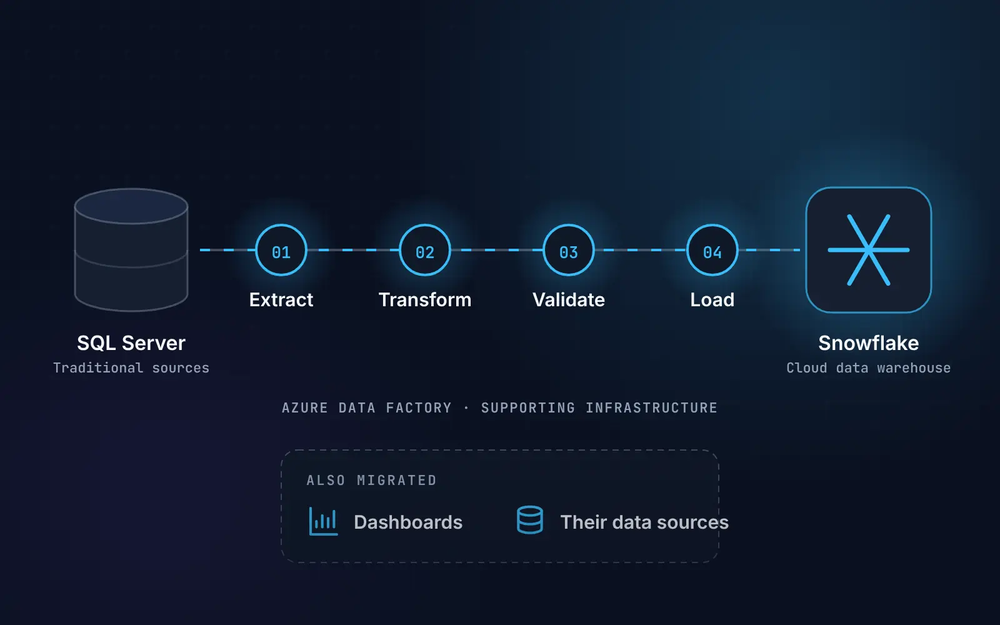

Enterprise Data Migration
A major enterprise initiative to move different types of data from traditional Microsoft SQL Server environments into a Snowflake data warehouse. The initiative also involved migrating dashboards and their underlying data sources. The migration is complete.
- Data Engineering
- Analytics

- My contribution
- Contributor to a team initiative
- Status
- Completed
- From → to
- SQL Server → Snowflake
- Categories
- Data Engineering · Analytics
The problem
Different types of enterprise data held in traditional Microsoft SQL Server environments needed to move into a cloud data warehouse, Snowflake.
Technical approach
Data moves from the SQL Server sources through extract, transform, validate and load stages into Snowflake, with Azure Data Factory as supporting infrastructure. Validation is its own stage, so problems surface before data reaches the warehouse. Dashboards and their underlying data sources were migrated too.
Source to warehouse
Functional view drawn from the documented capabilities, with sample content. It is not a system architecture diagram.
- Microsoft SQL ServerTraditional sources
- ExtractFrom the SQL Server sources
- TransformFor the target warehouse
- ValidateBefore loading
- LoadInto Snowflake
- SnowflakeCloud data warehouse
Azure Data Factory · supporting infrastructure
Also part of the initiative
- Dashboards
- Their underlying data sources
Related scope; no order or dependency is implied.
Validation is its own stage, between transformation and loading, so problems surface before data reaches the warehouse.
My contribution
This was a team initiative, and I was one of its contributors.
Technologies
Results and status
The migration is complete. Data moved from traditional Microsoft SQL Server environments into Snowflake, and the initiative also covered dashboards and their underlying data sources.
- Status
- Completed
- Metrics
- No published metrics
Walkthrough
It follows sample data from SQL Server through extraction, transformation, validation and loading into Snowflake, alongside dashboards and their data sources.
Read the walkthrough as text
- Source dataDifferent types of data sit in traditional Microsoft SQL Server environments (sample tables).
- ExtractData is extracted from the SQL Server sources.
- Transform and validateIt’s transformed for the target warehouse, then validated before loading.
- Load into SnowflakeValidated data is loaded into the Snowflake data warehouse.
- Dashboards and data sourcesThe initiative also involved migrating dashboards and their underlying data sources.
- The end-to-end flowExtract, transform, validate, load, plus dashboards and their data sources, with Azure Data Factory as supporting infrastructure.
Repository and demo
- RepositoryNot public: company project
- Live demoNot public: company project
- Illustrative walkthroughDescribed above, as text